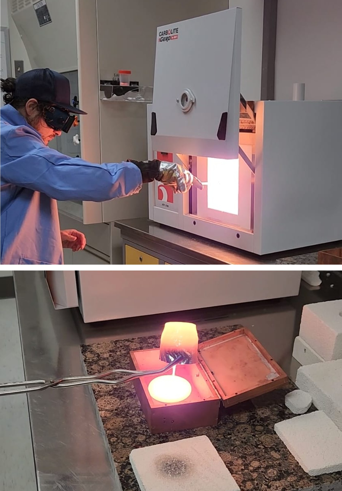
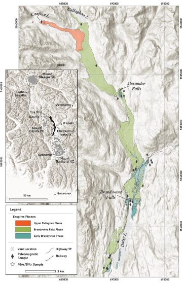
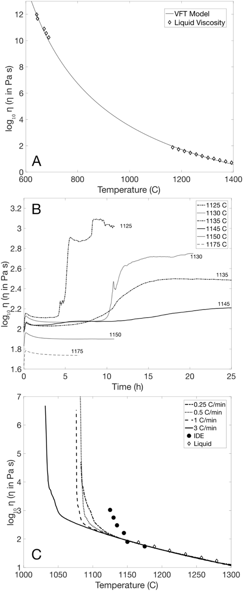
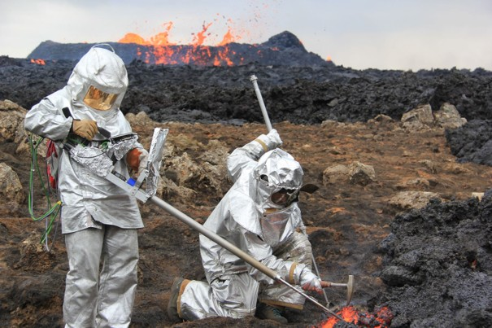
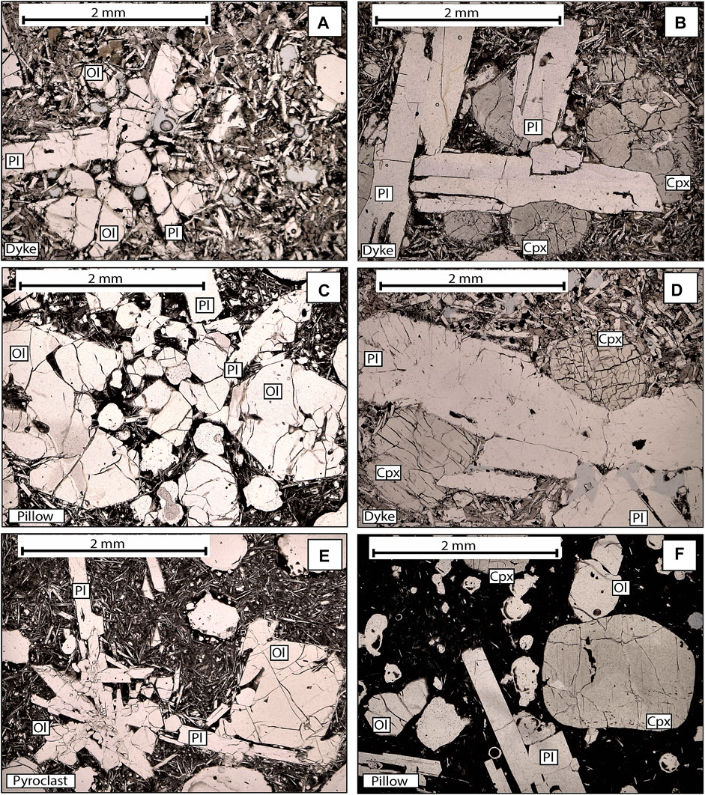

Research
My current work focuses on understanding the physical properties of lava, specifically the viscosity of basalts. I use a combined approach of in-situ field techniques and high-temperature laboratory techniques to study how lava viscosity changes with temperature, crystallinity, vesicularity, and oxygen fugacity.
Additionally, I have a keen interest in physical and petrochemical volcanology. I am fascinated by magma-ice interactions and the landforms they produce. I have been involved in studies that use the presence (and absence) of glaciovolcanic landforms to reconstruct localized paleoenviroments—an underutilized tool for understanding past glaciation cycles.
I am also interested in shallow magmatic plumbing systems within the crust. My work includes petrochemical studies that reveal insights into monogenetic magma chamber dynamics and crustal storage conditions, using geochemical data conjoined with field observations.
Current Projects
This project investigates the rheological and textural evolution of basaltic lava erupted during the October 2019 Piton de la Fournaise event. Remelt rheology experiments are performed across both supra‑liquidus and sub‑liquidus conditions to capture viscosity variations as a function of temperature, crystallization kinetics, and oxygen fugacity.
The primary goal is to recover realistic viscosity ranges for 2019 Piton de la Fournaise basalts by integrating laboratory‑derived viscosity curves with petrologically constrained parameters obtained from natural samples (e.g., groundmass crystallinity, melt composition, MgO‑based thermometry). These combined datasets allow reconstruction of the lava’s rheological envelope and provide improved constraints for modeling flow emplacement and solidification behavior.

This study examines the rheology of the Cheakamus River valley‑filling basalt flows using controlled remelt rheology experiments to quantify viscosity across the full crystallization interval. Both supra‑liquidus melt behavior and sub‑liquidus suspension rheology are characterized to determine how temperature, crystal fraction, and textural development influence flow mobility.
The experimentally derived viscosity ranges are implemented into numerical lava‑flow models such as PyFLOWGO and LAVA2D to simulate emplacement dynamics and reconstruct inundation parameters. This work provides a physics‑based framework for understanding how low‑viscosity basaltic lavas infill valleys, interact with topography during emplacement.
Past Projects
This study uses remelt rheology on summit lavas from the 2022 Mauna Loa eruption to generate the first complete, experimentally derived rheological characterization of Mauna Loa basalt. Both supra‑liquidus and sub‑liquidus conditions are simulated to capture viscosity changes across temperature, crystallization state, and oxygen fugacity. Melt viscosity is constrained across the full crystallization interval, including isothermal sub‑liquidus experiments and controlled cooling experiments at rates between 0.25 and 3.00 °C/min, performed at oxygen fugacities relevant to Mauna Loa storage and eruption conditions (log fO₂ = –8.7).
Sub‑liquidus experiments at various thermal equilibria are quenched and analyzed for crystal abundance using scanning electron microscopy, enabling detailed textural quantification as a function of temperature, crystal fraction, and effective viscosity. These laboratory‑derived textures and viscosities are then compared with water‑quenched natural samples collected along the 2022 flow channel, allowing reconstruction of the down‑flow evolution of crystallinity, vesicularity, and melt composition.
Integrating experimental and natural data reveals that Mauna Loa lavas were emplaced at viscosities between approximately 10¹·⁵ and 10⁴·⁵ Pa s over the temperature range of ~1150–1090 °C. Below ~1090 °C, the lava enters a regime of rapid viscosity increase driven by groundmass crystallization, marking the transition toward effective solidification. These results define a rheological envelope for Mauna Loa basalt that captures the realistic range of flow behavior prior to rheological lockup.
This project combines in-situ field viscometry with lab-based remelt rheology to trace the true natural evolution of lava viscosity. This type of work was only made possible through recent advances in field instrumentation (Harris et al. 2024b) (Chevrel et al. 2023).
Our findings highlight how effective field viscometry is at capturing the rheological evolution of a unique eruption (Harris et al. 2024a) while also verifying the successful capabilities and pointing out some of the limitations of the more conventionally used laboratory remelt viscometry approach (Harris et al. 2025).
This study reconstructed the eruptive history of Cracked Mountain, a tuya near Mount Meager, using physical volcanology techniques to decipher the sequence of eruptive events. Paleomagnetic analyses were conducted on all eruptive units to determine their relative timing, ultimately demonstrating that the volcano erupted in a single event (i.e., it is monogenetic) (Harris et al. 2022).
Additional mapping of glaciovolcanic and non-glaciovolcanic landforms within the Mount Meager volcanic complex was combined with new 40Ar/39Ar geochronology ages, enabling us to produce a detailed paleoenvironmental reconstruction of the last 500,000 years in the localized region of southwestern British Columbia (Harris et al. 2023).
We performed petrochemical analyses of basalts from Cracked Mountain, which revealed a bimodal crystal assemblage and distinct major element signatures. To investigate how these bimodal lavas may have formed within a magma chamber, we conducted extensive thermodynamic modeling using MELTS and tested phase assemblages using Pearce element ratios.
Our findings indicate that two distinct magma chambers existed prior to the monogenetic eruption at Cracked Mountain, with evidence of minor magmatic mixing between them (Harris and Russell 2022).